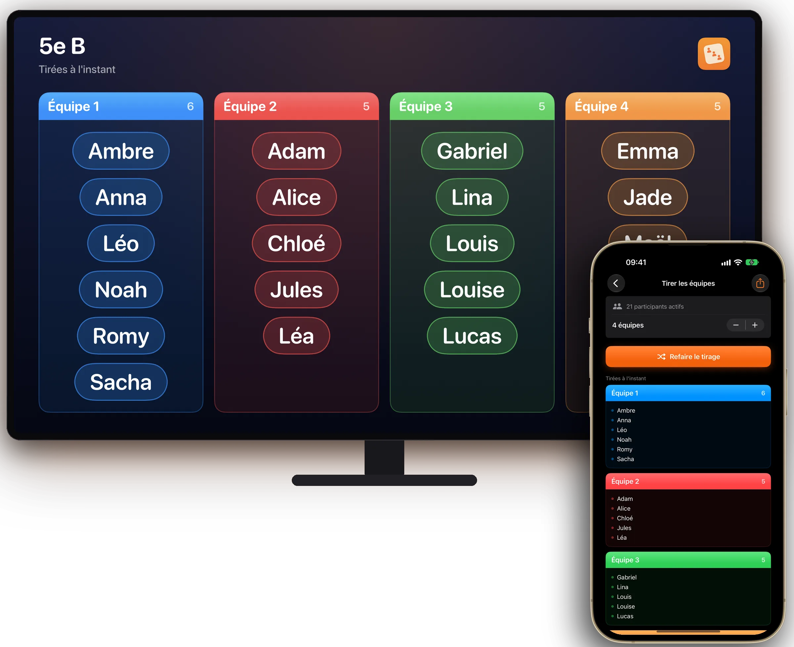
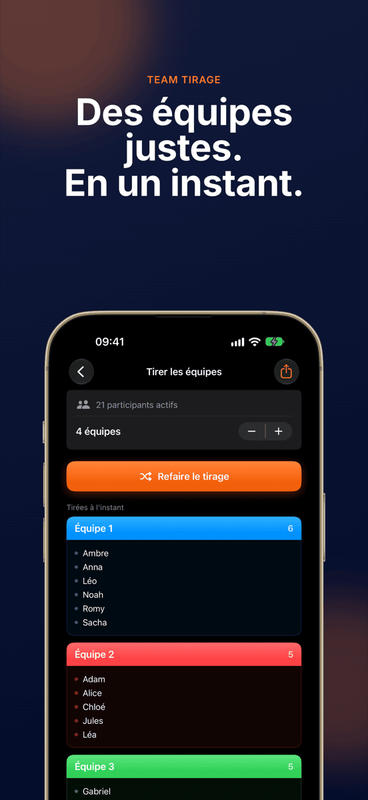
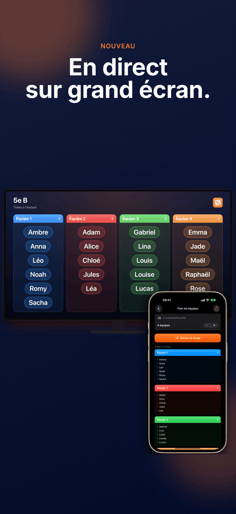
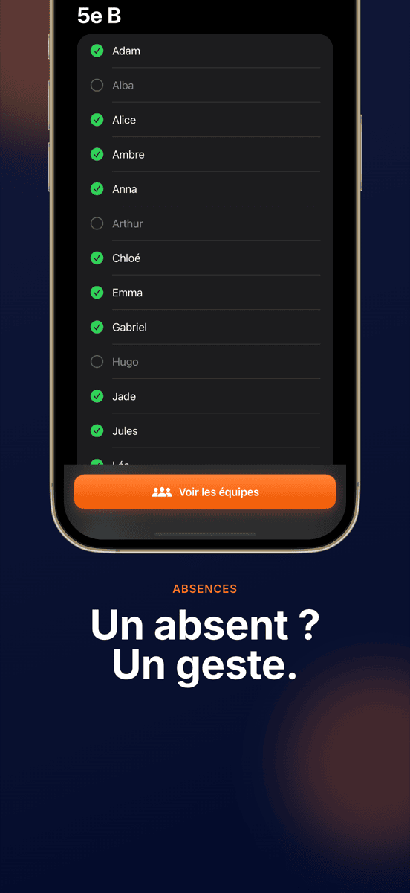
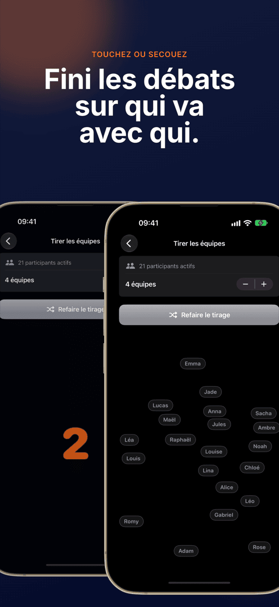
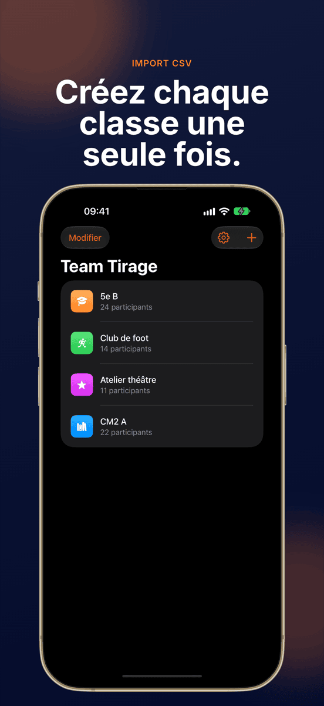
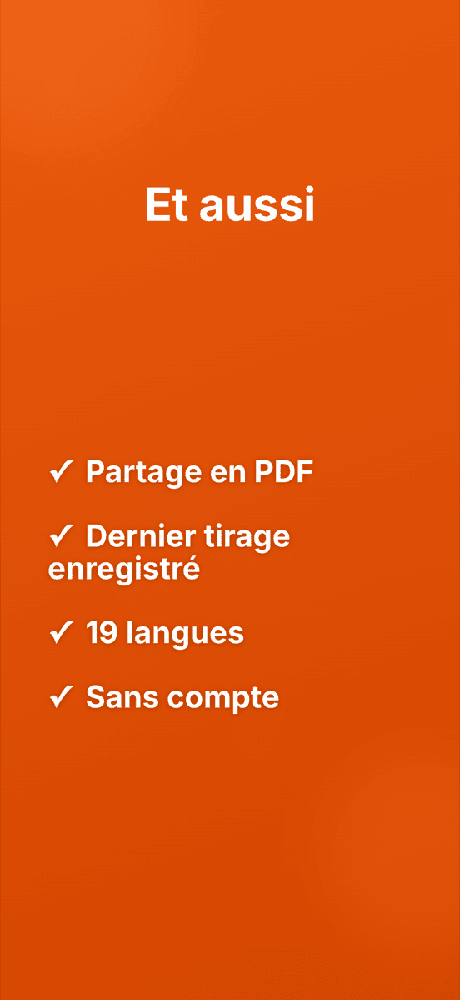

NOUVEAUEn direct sur grand écran
Team Tirage
Des équipes justes. En un instant.







Des équipes sans discussion.
En direct sur grand écran
Via AirPlay ou câble, toute la classe voit les équipes se former.
Un geste, c’est fait
Chacun est réparti au hasard et équitablement entre les équipes.
Les groupes restent enregistrés
Créez une classe, une équipe ou un club une seule fois et tirez au sort autant de fois que vous voulez. Chaque groupe garde son dernier tirage.
Absent ? Exclu
Décochez les absents d’un geste, le tirage les ignore.
Nombre d’équipes au choix
Par deux, par trois, par quatre ou en plus grandes équipes.
Mélangé sous vos yeux
Une animation mélange tous les noms à la vue de tous. Secouer l’appareil lance un nouveau tour.
C’est aussi simple que ça.
Créer un groupe
Saisissez les noms ou importez un CSV.
Décocher les absents
Un geste par nom absent aujourd’hui.
Tirer au sort
Choisissez le nombre d’équipes, touchez, regardez.
Montrer
Au projecteur ou en PDF.
Guide
Questions fréquentes
Comment répartir un groupe en équipes au hasard ?
Créez votre groupe une seule fois dans Team Tirage, ajoutez les participants et lancez le tirage. L’app répartit chacun au hasard et équitablement entre le nombre d’équipes choisi.
À qui s’adresse Team Tirage ?
À tous ceux qui forment régulièrement des équipes : enseignants, entraîneurs, animateurs d’ateliers, clubs et organisateurs d’événements.
Puis-je choisir le nombre d’équipes ?
Oui. Vous choisissez le nombre d’équipes, des binômes aux grandes équipes, et Team Tirage répartit les participants de façon équilibrée.
Mes données sont-elles enregistrées ou transmises ?
Tous les groupes et tous les noms restent uniquement sur votre appareil. Aucune donnée n’est envoyée à un serveur.
Puis-je importer des listes de noms depuis Excel ?
Oui. Exportez la liste en CSV depuis Excel ou Google Sheets et importez-la dans Team Tirage. Toute la classe est créée en quelques secondes.
Puis-je afficher le tirage au projecteur ?
Oui. Lorsque votre iPhone ou iPad est relié à un projecteur, une Apple TV ou un moniteur via AirPlay ou câble, Team Tirage y affiche le tirage en direct, en format paysage. Vous continuez à piloter l’app sur votre appareil.
Combien coûte Team Tirage ?
Le téléchargement et le premier tirage sont gratuits. Pour les tirages suivants, il faut l’abonnement Pro, mensuel ou annuel, que vous pouvez d’abord essayer gratuitement. Team Tirage fonctionne sur iPhone et iPad à partir d’iOS 17.